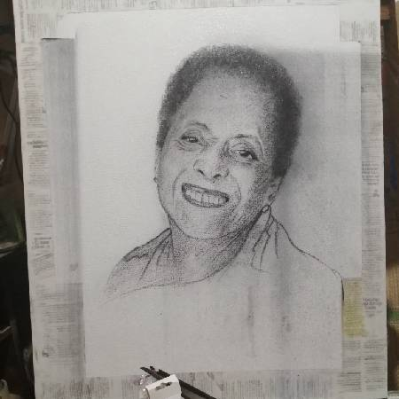

Generos Artísticos

Retratos a carboncillo
Retratos al carboncillo sobre cartulina, lienzo, y también incorporando monotipia, lo cual sugiere una composición muy interesante.

Bodegon
El bodegon es uno de los generos artisticos muy interesantes que plasma la naturaleza muerta sobre el espacio plástico.

Propuesta artistica
Es impresionante como el retrato se incopora sobre las figuras geometricas que tambien son parte de la composicion pictorica.